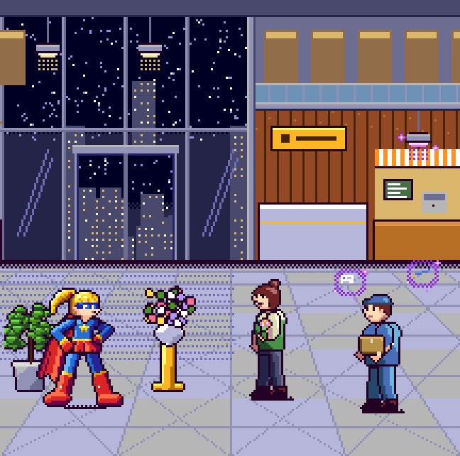
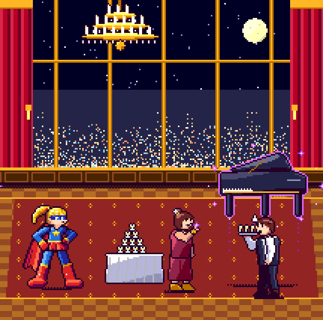
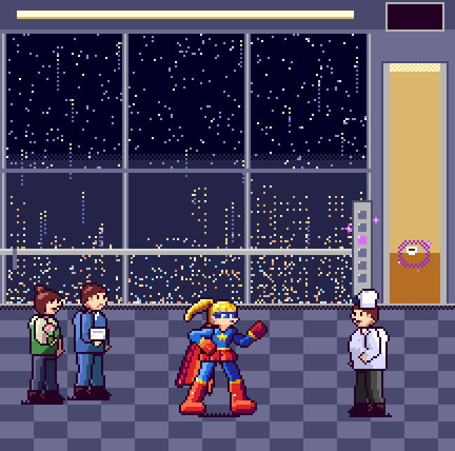
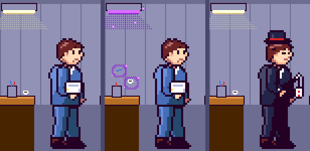
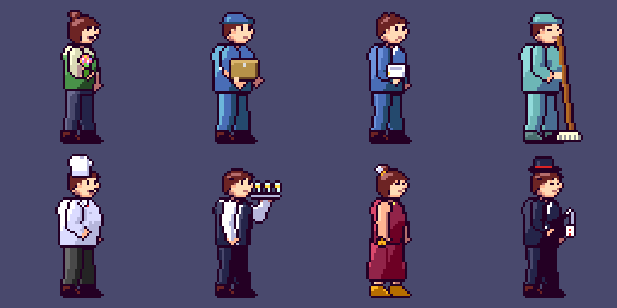

<title>高層ビルの見本</title>
<link rel="preconnect" href="https://fonts.googleapis.com">
<link rel="stylesheet" href="https://fonts.googleapis.com/css2?family=DotGothic16&family=M+PLUS+1p:wght@400;700&display=swap">
<style>
:root{
  --bg:#f3f1f7; --ink:#1f1a2b; --sub:#5d5670; --line:#d9d4e5; --panel:#3a3452; --acc:#8a3fd6; --chip:#e7e3f0;
  --wait:#2f6fd6; --go:#d6392b;
}
@media (prefers-color-scheme: dark){:root:not([data-theme="light"]){
  --bg:#17141f; --ink:#ece8f4; --sub:#a7a0b8; --line:#322c42; --panel:#3a3452; --acc:#c08aff; --chip:#262035; color-scheme:dark;}}
:root[data-theme="dark"]{--bg:#17141f; --ink:#ece8f4; --sub:#a7a0b8; --line:#322c42; --panel:#3a3452; --acc:#c08aff; --chip:#262035; color-scheme:dark;}
body{background:var(--bg);color:var(--ink);font-family:"M PLUS 1p","Hiragino Sans","Yu Gothic",system-ui,sans-serif;line-height:1.75;padding-inline:16px;padding-block:24px 48px}
main{max-width:860px;margin:0 auto;display:grid;gap:44px}
h1{font-family:"DotGothic16",monospace;font-size:clamp(26px,6vw,38px);line-height:1.2;margin:0;text-wrap:balance}
h2{font-family:"DotGothic16",monospace;font-size:22px;margin:0;text-wrap:balance}
p{margin:0;max-width:65ch}
section{display:grid;gap:12px}
.lead{color:var(--sub)}
.floor{font-family:"DotGothic16",monospace;font-size:13px;letter-spacing:.08em;color:var(--acc)}
.shot{position:relative;max-width:648px;width:100%}
.shot img{display:block;width:100%;height:auto;image-rendering:pixelated;border-radius:6px}
.pix{image-rendering:pixelated;background:var(--panel);border-radius:6px;display:block;max-width:100%;height:auto}
.mark{position:absolute;transform:translate(-50%,-50%);font-family:"DotGothic16",monospace;font-size:clamp(11px,2.6vw,16px);color:#fff;padding:1px 8px;border-radius:4px;border:2px solid #fff;white-space:nowrap}
.mark.wait{background:var(--wait)}
.mark.go{background:var(--go)}
.num{position:absolute;font-family:"DotGothic16",monospace;color:#ffb347;font-size:clamp(10px,2.4vw,15px);transform:translate(-50%,-50%)}
.legend{display:flex;gap:8px;flex-wrap:wrap;font-size:13px}
.legend span{background:var(--chip);border-radius:99px;padding:2px 10px}
.names{display:grid;grid-template-columns:repeat(4,minmax(0,1fr));gap:4px;max-width:768px;font-size:12px;color:var(--sub);text-align:center}
ul{margin:0;padding-left:1.2em;max-width:65ch}
li+li{margin-top:4px}
.note{border-left:3px solid var(--acc);padding-left:12px}
</style>
<main>
<header style="display:grid;gap:10px">
  <h1>高層ビルの見本</h1>
  <p class="lead">ステージ4(高層ビル)の見本の絵です。ゲームの人と同じ描き方のコードで描き、ゲームの画面と同じ横216ドットの大きさで作りました。どれも見本なので、ゲームに入れるときに描き直します。紫の光が、超能力のヴィランのしるし(もれ)です。</p>
</header>

<section>
  <div class="floor">WAVE 1 ・ 1階</div>
  <h2>ロビーとお店</h2>
  <div class="shot"></div>
  <p>左は大きなガラスの壁で、外の夜の街と自動ドアが見えます。右は木の壁の受付と、しまのひさしのカフェです。上には2階の手すりがあります。</p>
  <p>右の配達員がヴィランです。すぐ上のあかりが紫になり、頭の上で名刺とペンが浮いています。まん中の花屋の店員は市民です。</p>
</section>

<section>
  <div class="floor">WAVE 4 ・ 最上階</div>
  <h2>パーティ会場</h2>
  <div class="shot">
    
    <span class="mark go" style="left:81%;top:40%">行け!</span>
  </div>
  <p>赤いカーテン、シャンデリア、大きな窓と月があります。窓の外の街は、はるか下に小さな明かりの粒として見えます。1階の窓の外より街が小さいので、高い所にいると分かります。</p>
  <p>結果発表の「念力で運ぶ」の場面です。見逃したドレスの女性(ヴィラン)がピアノを浮かせ、その下でウェイター(市民)がおびえています。ピアノの下で「行け」を押すと、ピアノはその場に落ちて壊れます。高い物なので被害額が大きくなります。</p>
</section>

<section>
  <div class="floor">WAVE 3 と 4 のあいだ</div>
  <h2>エレベーターラッシュ</h2>
  <div class="shot">
    
    <span class="num" style="left:91.7%;top:3.8%">42</span>
    <span class="mark wait" style="left:78%;top:52%">待て!</span>
  </div>
  <p>後ろはガラスで、夜景が下へ流れていきます。右上に階の数字が出ます(数字はコードで入れます)。</p>
  <p>右の扉から、シェフが乗ってきたところです。その人のそばのボタンだけ紫に光り、頭の上でコーヒーカップが浮いているので、ヴィランです。左の奥の2人は、待てで通した市民です。通した人は奥にたまっていきます。</p>
</section>

<section>
  <h2>仕分けの画面での見え方</h2>
  <div class="legend"><span>左:市民</span><span>まん中:ヴィラン(同じ絵)</span><span>右:紛らわしい市民</span></div>
  <div style="overflow-x:auto"></div>
  <p>仕分けの画面と同じく、人を2倍で出しています。左上の照明と、左下の机は、だれが出ても同じ場所にあります。</p>
  <ul>
    <li>左とまん中は、まったく同じ人の絵です。違うのは、まん中だけ照明が紫になり、机のペンとカップが浮いていることです</li>
    <li>右の手品師は市民です。カードが浮いて見えますが、つえの先から糸で吊っているのが見えます</li>
  </ul>
  <p class="note">人の絵を変えずに周りだけを変えるので、市民とヴィランを同じ絵にできます。人を8種類にしても、絵の数はあまり増えません。</p>
</section>

<section>
  <h2>出てくる人 8種類</h2>
  <div style="overflow-x:auto"></div>
  <div class="names">
    <span>花屋の店員(1階)</span><span>配達員(1階)</span><span>新人の会社員(18階)</span><span>清掃員(18階)</span>
    <span>シェフ(35階)</span><span>ウェイター(35階)</span><span>ドレスの女性(最上階)</span><span>手品師(最上階)</span>
  </div>
  <p>階ごとに2種類ずつです。花束、段ボール、書類の束、モップ、コック帽、お盆のグラス、羽の髪飾り、シルクハットと、持ち物でどこの階の人か分かるようにしました。肌と髪の色は、ほかのステージの人と同じです。</p>
</section>

<section>
  <h2>まだ描いていないもの</h2>
  <ul>
    <li>18階のオフィスと、35階のレストラン街の背景</li>
    <li>ボス(ビルのオーナー)と、化けた姿</li>
    <li>シャンデリアを浮かせるボス戦の場面</li>
  </ul>
</section>
</main>
